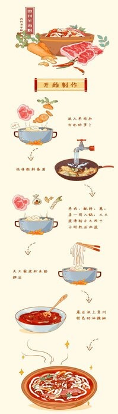
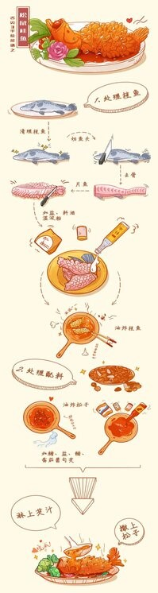
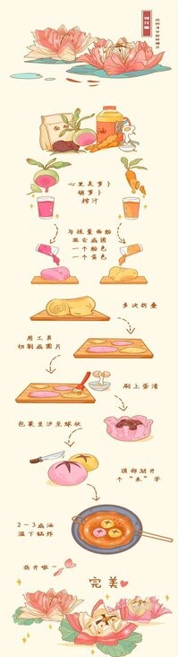

-
Mutton Rice Noodles is a famous snack in Guizhou,
and it is the favorite for brunch of most Guizhou people today.
It has been produced for more than 300 years.
 -
Squirrel mandarin fish is a traditional local dish in Suzhou City, Jiangsu Province.
When the fried fish is served on the table, it is poured with steaming marinade,
and it squeaks, named after it resembles a squirrel.
 -
Jiangnan, just like Kunqu opera and gardens, dim sum has the aura of this land.
Hangzhou refreshments have the beauty of the West Lake landscape,
and the West Lake has lotus, so there is also lotus crisp.
